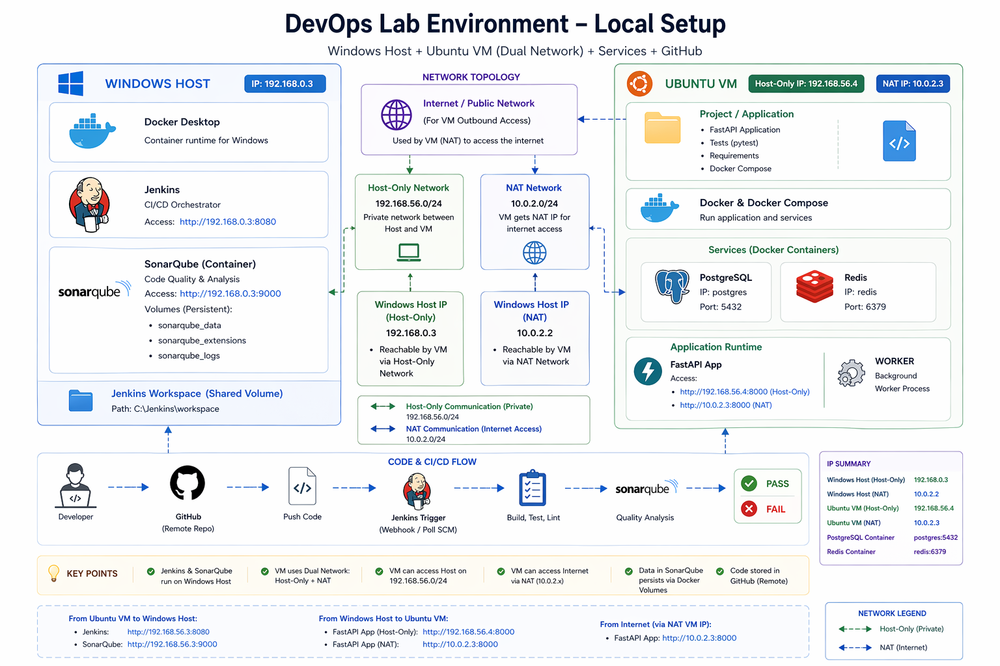

DevOps Lab Setup Guide
Goal
Prepare a complete local environment to run the DevOps CI/CD lab from scratch.
This setup ensures:
- Consistent development environment
- Proper communication between host and VM
- All required tools are installed and verified
How to Use This Guide
This setup is a prerequisite for all CI/CD lab phases.
Complete this guide before proceeding to:
- Overview
- Phase 1: CI Pipeline
- Phase 2: Integration Pipeline
- Phase 3: CD Pipeline
- Phase 4: Hardening & Scaling
Architecture Overview

Logical View
Windows Host
├── Docker Desktop
├── Jenkins
├── SonarQube (Container + Volumes)
│
└── Ubuntu VM
├── Docker & Docker Compose
├── Application Code (FastAPI)
└── Redis + Postgres (Containers)
Windows Host Setup
Install Required Tools
- Docker Desktop
- Git
- (Optional) Python
Verify Docker:
docker --version
docker ps
Jenkins Setup
Install Jenkins (Docker or native).
Verify access:
http://localhost:8080
SonarQube Setup (with Persistence)
Run SonarQube Container
docker run -d --name sonarqube \
-p 9000:9000 \
-v sonarqube_data:/opt/sonarqube/data \
-v sonarqube_extensions:/opt/sonarqube/extensions \
-v sonarqube_logs:/opt/sonarqube/logs \
sonarqube:lts
Verify Container
docker ps
Check Logs
docker logs -f sonarqube
Wait until:
SonarQube is operational
Access UI
http://localhost:9000
Login:
- Username: admin
- Password: admin
Change password when prompted.
Verify Volumes
docker volume ls
Expected:
- sonarqube_data
- sonarqube_extensions
- sonarqube_logs
Get Windows Host IP
ipconfig
Note:
IPv4 Address: 192.168.x.x
This will be used from Ubuntu VM:
http://<windows-ip>:9000
Ubuntu VM Setup
Install Dependencies
sudo apt update
sudo apt install docker.io docker-compose git -y
Enable Docker
sudo systemctl enable docker
sudo systemctl start docker
Add User to Docker Group
sudo usermod -aG docker $USER
Re-login to apply changes.
Verify Docker
docker ps
Clone Repository
git clone <your-repo-url>
cd project
Start Required Services
docker-compose up -d postgres redis
Verify Services
docker ps
Ensure:
- Postgres running
- Redis running
Application Run (Development Mode)
Start API:
uvicorn app.main:app --reload
Start worker:
python worker.py
Networking Validation
From Ubuntu VM:
curl http://<windows-ip>:9000
Ensure SonarQube is reachable.
Testing Modes
Unit Tests (CI Mode)
- No Docker required
- Use mocks
- Fast execution
Integration Mode
- Requires Redis + Postgres
- Uses docker-compose
- Real environment testing
SonarQube Validation
After CI runs:
- Open SonarQube dashboard
-
Check:
-
Code coverage
- Bugs
- Code smells
- Quality gate status
Practice Scenarios
- Break a test → pipeline should fail
- Reduce coverage → quality gate should fail
- Fix issues → pipeline should pass
Common Issues
Docker Not Running
- Start Docker Desktop
Port Already in Use
docker ps
docker stop <container>
SonarQube Not Accessible from VM
- Check Windows firewall
- Allow inbound port 9000
SonarQube Container Restarting
- Increase Docker RAM (minimum 4GB)
Final Checklist
- [ ] Docker running on Windows
- [ ] Jenkins accessible
- [ ] SonarQube accessible
- [ ] Volumes created
- [ ] Ubuntu VM ready
- [ ] Docker working in VM
- [ ] Repo cloned
- [ ] Redis & Postgres running
- [ ] VM can reach SonarQube
Next Step
Proceed to: